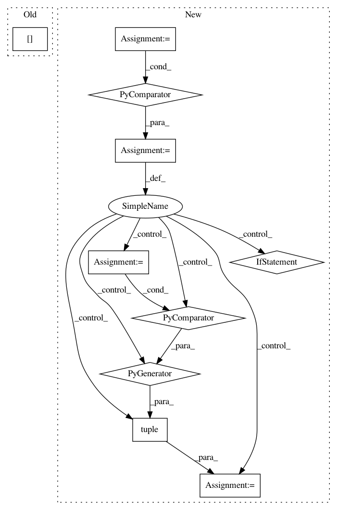

35ed48386992d824973d8ed39cfa299614b7cd34,kur/loggers/binary_logger.py,BinaryLogger,load_statistic,#BinaryLogger#Any#,224
Before Change
if len(batches):
values = values[-len(batches):]
else:
values = values[0:0]
elif len(batches) > len(values):
if len(values):
batches = batches[-len(values):]
else:
After Change
statistic.data_type, statistic.tag
))
lens = [len(x) for x in (values, batches, timestamps) if x is not None]
if not lens:
return (None, None, None)
keep = min(lens)
def modify(x):
Truncates the data series appropriately.
if x is None:
return None
elif keep:
return x[-keep:]
else:
return x[0:0]
values, batches, timestamps = \
tuple(modify(x) for x in (values, batches, timestamps))
return (batches, timestamps, values)
////// EOF.EOF.EOF.EOF.EOF.EOF.EOF.EOF.EOF.EOF.EOF.EOF.EOF.EOF.EOF.EOF.EOF.EOF.EOF
In pattern: SUPERPATTERN
Frequency: 4
Non-data size: 10
Instances
Project Name: deepgram/kur
Commit Name: 35ed48386992d824973d8ed39cfa299614b7cd34
Time: 2017-02-28
Author: ajsyp@syptech.net
File Name: kur/loggers/binary_logger.py
Class Name: BinaryLogger
Method Name: load_statistic
Project Name: Theano/Theano
Commit Name: 289c3bd43be7cc0ca14bb505611f1f84e0e53c4a
Time: 2016-10-11
Author: gvtulder@gmail.com
File Name: theano/tensor/nnet/tests/test_abstract_conv.py
Class Name: BaseTestConv2d
Method Name: get_output_shape
Project Name: cornellius-gp/gpytorch
Commit Name: 303217b34070dc47a86622b62764098999b0d7f5
Time: 2018-12-12
Author: gpleiss@gmail.com
File Name: gpytorch/lazy/lazy_tensor.py
Class Name: LazyTensor
Method Name: _quad_form_derivative
Project Name: mathics/Mathics
Commit Name: 988d33a3e088759c570f143fdb2ab22c54c0f520
Time: 2016-09-12
Author: Bernhard.Liebl@gmx.org
File Name: mathics/builtin/numeric.py
Class Name: Fold
Method Name: fold